价格回到十年前~
OCR 识别提示（待核对）
- OCR 自动识别文字，尚未逐字校对；可能错字、漏字、漏行，数字、姓名、标点及断行也可能有误，请以截图为准。
- 这里只保留 PDF 已截到的正文、留言和作者回复；截图以外的留言不在此存档中。
- 未从截图推断留言总数或回复关系；手机界面文字也可能混入 OCR。
- 低置信标记仅为机器提示，并不表示未标记的文字已经准确。
识别工具：tesseract 5.5.0 · tesseract-ocr/tessdata_best chi_sim。识别器置信度仅用于提示核对，不是文字准确率。
第 1 页 · 原始截图
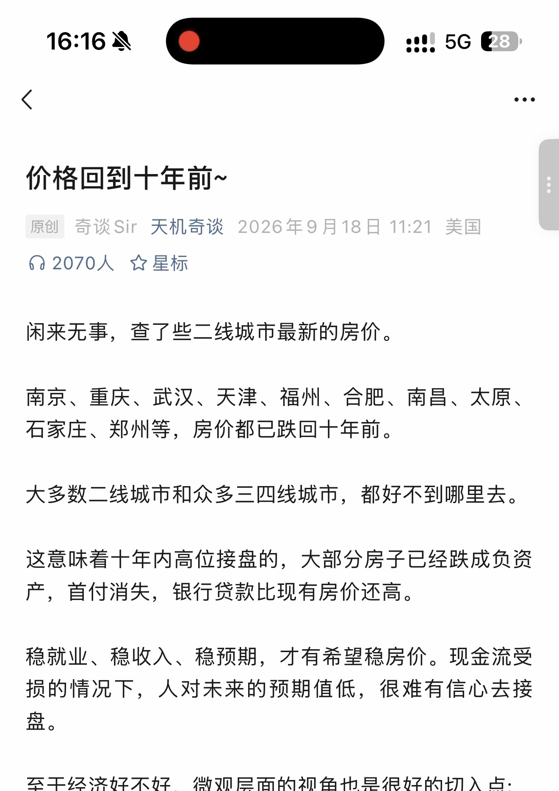
查看本页自动识别文字（OCR待核对） · 11 处低置信度提示
以下为未经逐字核对的自动识别结果，请以上方原图为准。
识别器标记 11 处低置信度，请对照截图核对
这些是识别器的风险提示，并不等于已确认的错误。
- ocx 人》
- 们 2070 人安星标
- 南京、 重庆、 武汉、 天津、 福州、 合肥、 南昌、 太原、
- 稳就业、 稳收入、 稳预期， 才有希望稳房价。 现金流受
- 损的情况下， 人对未来的预期值低， 很难有信心去接
- 生
- 至于经济好不好， 微观层面的视角也是很好的切入点 :
第 2 页 · 原始截图
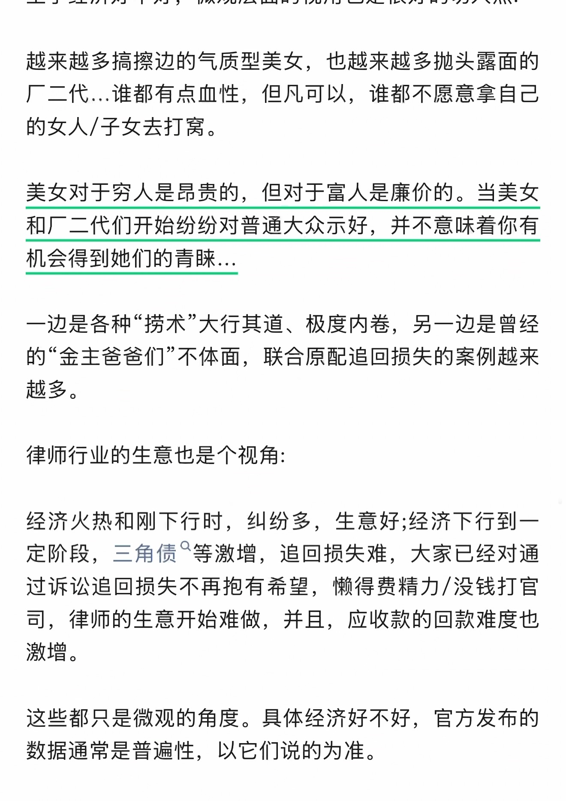
查看本页自动识别文字（OCR待核对） · 23 处低置信度提示
以下为未经逐字核对的自动识别结果，请以上方原图为准。
识别器标记 23 处低置信度，请对照截图核对
这些是识别器的风险提示，并不等于已确认的错误。
- 越来越多搞擦边的气质型美女， 也越来越多抛头露面的
- 三二代 … 谁都有点血性， 但凡可以， 谁都不愿意拿自己
- 的女人 /子女去打窝。
- 和上三二代们开始纷纷对普通大众示好， 并不意味着你有
- 机会得到她们的青睐 …
- 一边是各种捞术 “大行其道、 极度内卷， 另一边是曾经
- 的金主爸爸们不体面， 联合原配追回损失的案例越来
- 定阶段， 三角债 “等激增， 追回损失难， 大家已经对通
- 过诉讼追回损失不再抱有希望， 懒得费精力 / 没钱打官
- 司， 律师的生意开始难做， 并且， 应收款的回款难度也
- 这些都只是微观的角度。 具体经济好不好， 官方发布的
第 3 页 · 原始截图
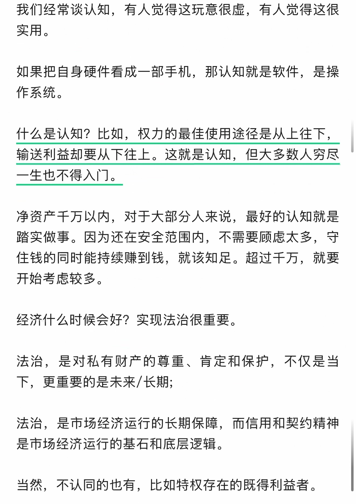
查看本页自动识别文字（OCR待核对） · 12 处低置信度提示
以下为未经逐字核对的自动识别结果，请以上方原图为准。
识别器标记 12 处低置信度，请对照截图核对
这些是识别器的风险提示，并不等于已确认的错误。
- 我们经常谈认知， 有人觉得这玩意很谍， 有人觉得这很
- 如果把自身硬件看成一部手机， 那认知就是软件， 是操
- 输送利益却要从下往上。 这就是认知， 但大多数人穷尽
- 净资产千万以内， 对于大部分人来说， 最好的认知就是
- 踏实做事。 因为还在安全范围内， 不需要顾虑太多， 守
- 住钱的同时能持续赚到钱， 就该知足。 超过干万， 就要
- 经济什么时候会好 ? 实现法治很重要。
- 法治， 是对私有财产的尊重、 肯定和保护， 不仅是当
- 下， 更重要的是未来 /长期 ;
- 法治， 是市场经济运行的长期保障， 而信用和契约精神
- 是市场经济运行的基石和底层逻辑。
第 4 页 · 原始截图
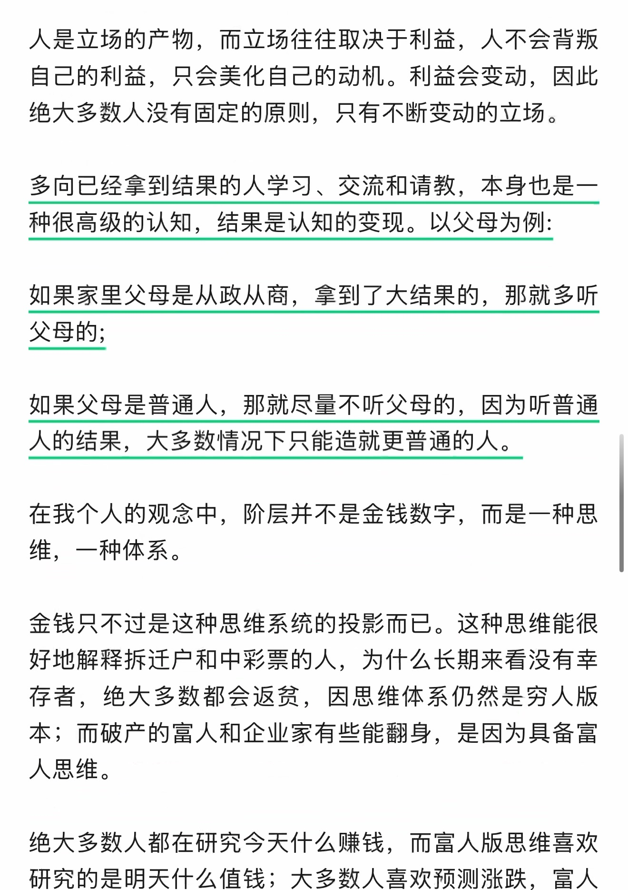
查看本页自动识别文字（OCR待核对） · 10 处低置信度提示
以下为未经逐字核对的自动识别结果，请以上方原图为准。
识别器标记 10 处低置信度，请对照截图核对
这些是识别器的风险提示，并不等于已确认的错误。
- 自己的利益， 只会美化自己的动机。 利益会变动， 因此
- 绝大多数人没有固定的原则， 只有不断变动的立场。
- 多向已经拿到结果的人学习、 交流和请教， 本身也是一
- 如果父母是普通人， 那就尽量不听父母的， 因为听普通
- 好地解释拆迁户和中彩票的人， 为什么长期来看没有幸
- 本 ; 而破产的富人和企业家有些能翻身， 是因为具备富
- 绝大多数人都在研究今天什么赚钱， 而富人版思维喜欢
- 研究的是明天什么值钱 ; 大多数人喜欢预测涨跌， 富人
第 5 页 · 原始截图
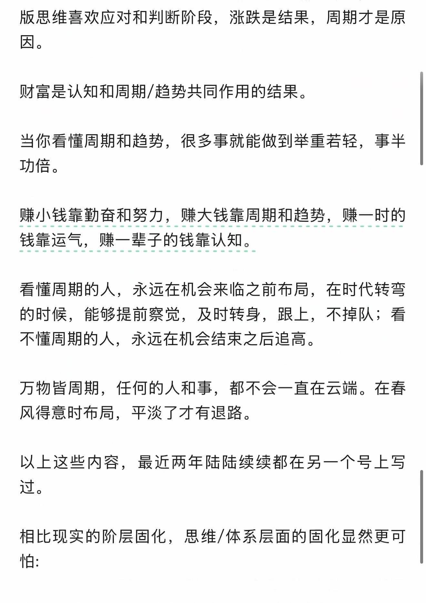
查看本页自动识别文字（OCR待核对） · 10 处低置信度提示
以下为未经逐字核对的自动识别结果，请以上方原图为准。
识别器标记 10 处低置信度，请对照截图核对
这些是识别器的风险提示，并不等于已确认的错误。
- 版思维喜欢应对和判断阶段， 涨跌是结果， 周期才是原
- 当你看懂周期和趋势， 很多事就能做到举重若轻， 事半
- 看懂周期的人， 永远在机会来临之前布局， 在时代转弯
- 的时候， 能够提前察觉， 及时转身， 跟上， 不掉队 ; 看
- 万物皆周期， 任何的人和事， 都不会一直在云端。 在春
- 风得意时布局， 平淡了才有退路。
- 以上这些内容， 最近两年陆陆续续都在另一个号上写
- 后
第 6 页 · 原始截图
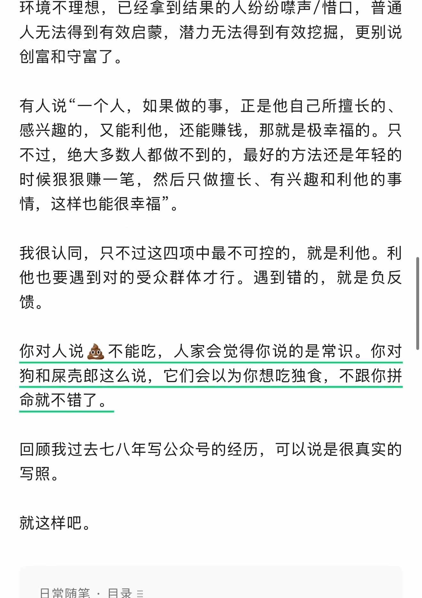
查看本页自动识别文字（OCR待核对） · 16 处低置信度提示
以下为未经逐字核对的自动识别结果，请以上方原图为准。
识别器标记 16 处低置信度，请对照截图核对
这些是识别器的风险提示，并不等于已确认的错误。
- 环境不理想， 已经拿到结果的人纷纷喉声 / 惜口， 普通
- 人无法得到有效启蒙， 潜力无法得到有效挖掘， 更别说
- 有人说 “一个人， 如果做的事， 正是他自己所擅长的、
- 情， 这样也能很幸福。
- 他也要遇到对的受众群体才行。 遇到错的， 就是负反
- 馈。
- 你对人说熏不能吃， 人家会觉得你说的是常识。 你对
- 狗和屎壳郎这么说， 它们会以为你想吃独食， 不跟你拼
- 回顾我过去七八年写公众号的经历， 可以说是很真实的
- 日常随笔目录 =
第 7 页 · 原始截图
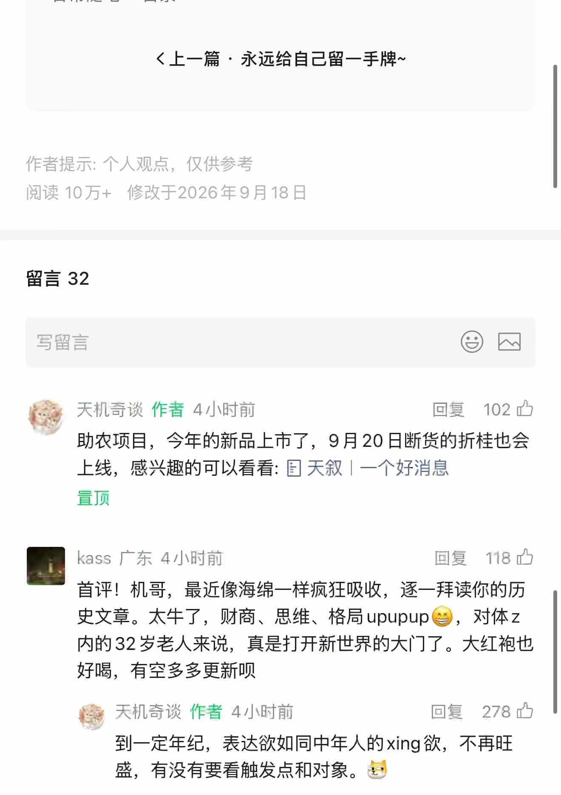
查看本页自动识别文字（OCR待核对） · 27 处低置信度提示
以下为未经逐字核对的自动识别结果，请以上方原图为准。
识别器标记 27 处低置信度，请对照截图核对
这些是识别器的风险提示，并不等于已确认的错误。
- 《上一篇永远给自己留一手牌 ~
- 写留言 CR
- 和天机奇谈作者 4 小时前回复 102 上
- 上线， 感兴趣的可以看看 : 图天叙 | 一个好消息
- 下
- 图 kass 广东 4 小时前回复 ”118 号
- 史文章。 太牛了， 财商、 思维、 格局 upupup 侈， 对体 z
- 内的 32 岁老人来说， 真是打开新世界的大门了。 大红袍也
- 好喝， 有空多多更新员
- 惊天机奇谈作者 4 小时前回复 ”278 办
- 到一定年纪， 表达欲如同中年人的 xing 欲， 不青旺
- 盛， 有没有要看触发点和对象。 埃
第 8 页 · 原始截图
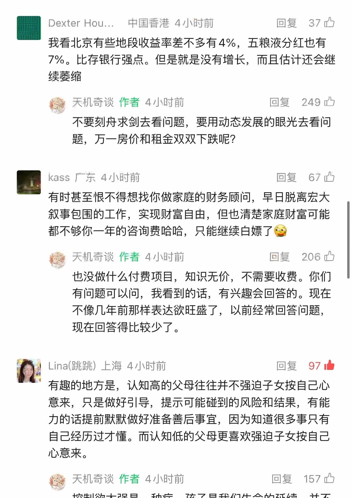
查看本页自动识别文字（OCR待核对） · 36 处低置信度提示
以下为未经逐字核对的自动识别结果，请以上方原图为准。
识别器标记 36 处低置信度，请对照截图核对
这些是识别器的风险提示，并不等于已确认的错误。
- 图 Dexter Hou... 中国香港 4 小时前回复 37 已
- 我看北京有些地段收益率差不多有 4%， 五粮液分红也有
- 7%。 比存银行强点。 但是就是没有增长， 而且估计还会继
- 续萎缩
- 惊天机奇谈作者 4 小时前回复 ”249 中
- 不要刻舟求剑去看问题， 要用动态发展的眼光去看问
- 图 kass 厂东 4 小时前回复 ”67 力
- 都不够你一年的咨询费哈哈， 只能继续白嫖了镶
- 区天机奇谈作者 4 小时前回复 go
- 也没做什么付费项目， 知识无价， 不需要收费。 你们
- 不像几年前那样表达欲旺盛了， 以前经常回答问题，
- Lina( 跳跳 ) 上海 4 小时前回复 97 中
- 意来， 只是做好引导， 提示可能碰到的风险和结果， 有能
- 力的话提前默默做好准备善后事宜， 因为知道很多事只有
- 络天机奇谈作者 4 小时前回复 ”157 内
- 控制欲太强是一种病， 孩子是我们生命的延续， 并不
第 9 页 · 原始截图
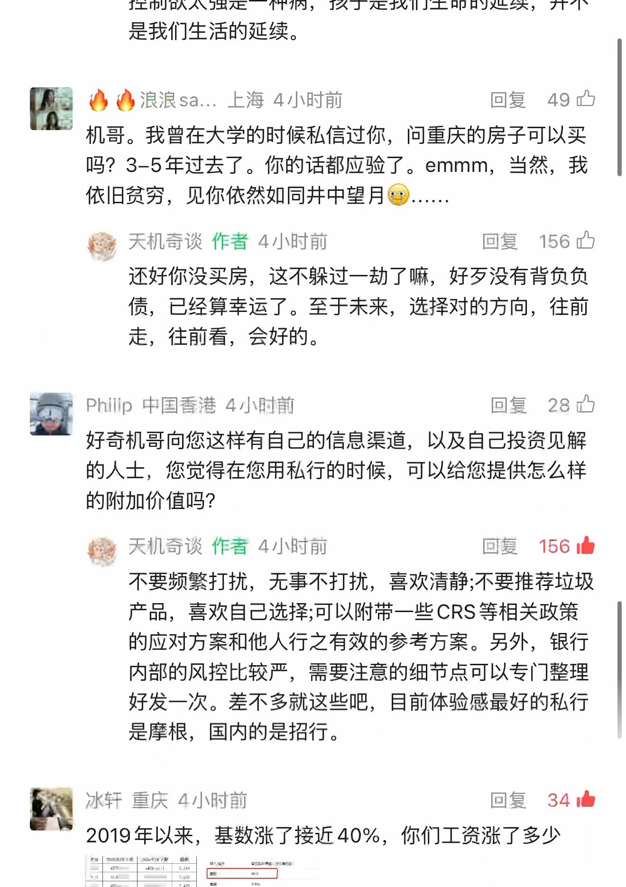
查看本页自动识别文字（OCR待核对） · 48 处低置信度提示
以下为未经逐字核对的自动识别结果，请以上方原图为准。
识别器标记 48 处低置信度，请对照截图核对
这些是识别器的风险提示，并不等于已确认的错误。
- 控制欲太强是一种病， 孩子是我们生命的延续， 并不
- 和网浪浪 sa.… 上海 4 小时前回复 ”49 只
- 依旧贫穷， 见你依然如同井中望月全
- 糠天机奇谈作者 4 小时前回复证已
- 还好你没买房， 这不躲过一劫了嘛， 好丈没有背负负
- Phillp 中国香港 4 小时前回复 ”28 四
- 好奇机哥向您这样有自己的信息渠道， 以及自己投资见解
- 输天机奇谈作者 4 小时前回复 156 由
- 不要频繁打扰， 无事不打扰， 喜欢清静 ;不要推荐垃圾
- 产品， 喜欢自己选择 ;可以附带一些 CRS 等相关政策
- 的应对方案和他人行之有效的参考方案。 另外， 银行
- 内部的风控比较严， 需要注意的细节扣可以专门整理
- 冰轩重庆 4 小时前回复 34 员
- 区 2019 年以来， 基数涨了接近 40%， 你们工资涨了多少
- ET
- 可二
- EE EL
第 10 页 · 原始截图
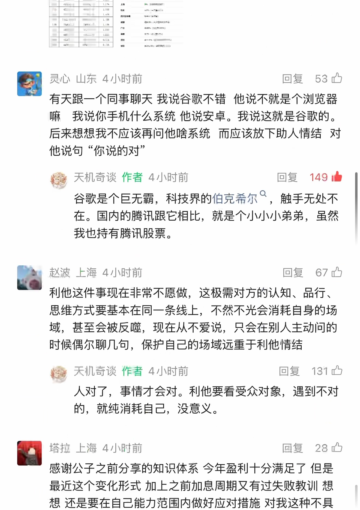
查看本页自动识别文字（OCR待核对） · 29 处低置信度提示
以下为未经逐字核对的自动识别结果，请以上方原图为准。
识别器标记 29 处低置信度，请对照截图核对
这些是识别器的风险提示，并不等于已确认的错误。
- 本灵心山东 4 小时前回复人已
- 嘛 ”我说你手机什么系统他说安卓。 我说这就是谷歌的。
- 后来想想我不应该再问他啥系统而应该放下助人情结对
- 他说句 “ 你说的对 ”
- 天机奇谈作者 4 小时前回复 149 由
- 谷歌是个巨无霸， 科技界的伯克希尔 ”， 触手无处不
- 在。 国内的腾讯跟它相比， 就是个小小小弟弟， 虽然
- 的赵波上海 4 小时前回复 ”67 号
- 域， 甚至会被反噬， 现在从不爱说， 只会在别人主动问的
- 发天机奇谈作者 4 小时前回复记忆
- 人对了， 事情才会对。 利他要看受众对象， 遇到不对
- 辐塔拉上海 4 小时前回复 ”28 喘
- 感谢公子之前分享的知识体系今年盈利十分满足了但是
- 想还是要在自己能力范围内做好应对措施对我这种不具
第 11 页 · 原始截图
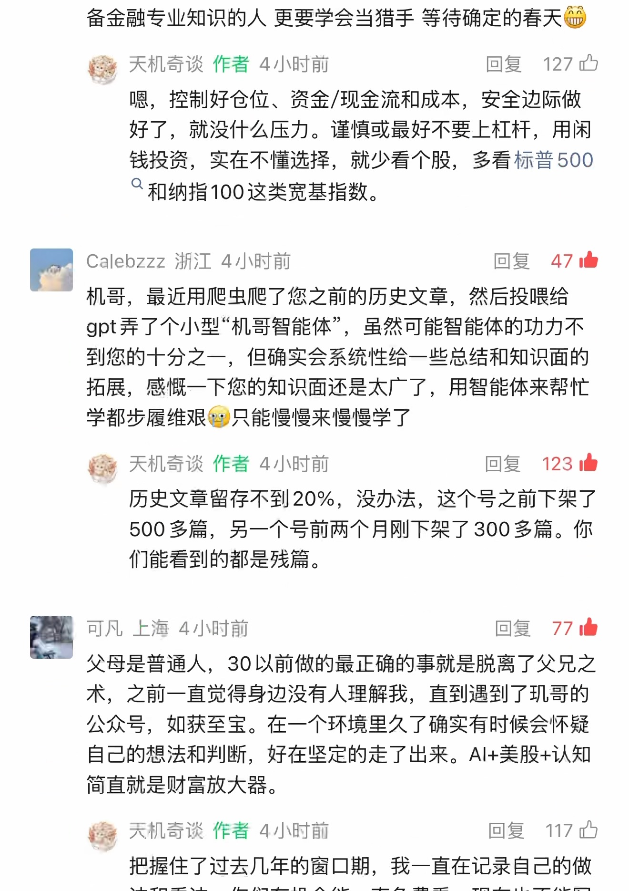
查看本页自动识别文字（OCR待核对） · 41 处低置信度提示
以下为未经逐字核对的自动识别结果，请以上方原图为准。
识别器标记 41 处低置信度，请对照截图核对
这些是识别器的风险提示，并不等于已确认的错误。
- 备金融专业知识的人更要学会当猎手等待确定的春天依
- 医天机奇谈作者 4 小时前回复已
- 咖， 控制好仓位、 资金 /现金流和成本， 安全边际做
- 好了， 就没什么压力。 谨慎或最好不要上杠杆， 用闲
- 钱投资， 实在不懂选择， 就少看个股， 多看标普 500
- ”和纳指 100 这类帘基指数。
- Calebzzz 浙江 4 小时前回复 47 员
- 机哥， 最近用爬虫怜了您之前的历史文章， 然后投喂给
- gpt 弄了个小型 “机哥智能体 ”， 虽然可能智能体的功力不
- 到您的十分之一， 但确实会系统性给一些总结和知识面的
- 拓展， 感慨一下您的知识面还是太广了， 用智能体来帮忙
- 学都步履维艰鲍只能慢慢来慢慢学了
- 敬天机奇谈作者 4 小时前回复 123 自
- 500 多篇， 另一个号前两个月刚下架了 300 多篇。 你
- 可凡上海 4 小时前回复 77 直
- 术， 之前一直觉得身边没有人理解我， 直到遇到了现哥的
- 自己的想法和判断， 好在坚定的走了出来。Al+ 美股 + 认知
- 每天机奇谈作者 4 小时前回复之已
第 12 页 · 原始截图
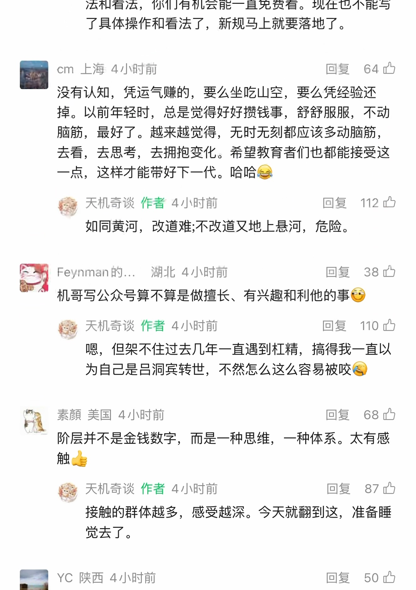
查看本页自动识别文字（OCR待核对） · 53 处低置信度提示
以下为未经逐字核对的自动识别结果，请以上方原图为准。
识别器标记 53 处低置信度，请对照截图核对
这些是识别器的风险提示，并不等于已确认的错误。
- 法和看法， 你们有机会能一直免费看。 现在也不能写
- 国此 sr 回复 ”64 四
- 没有认知， 凭运气赚的， 要么坐吃山空， 要么赁经验还
- 掉。 以前年轻时， 总是觉得好好攒钱事， 舒舒服服， 不动
- 脑筋， 最好了。 越来越觉得， 无时无刻都应该多动脑筋，
- 去看， 去思考， 去拥抱变化。 希望教育者们也都能接受这
- 一点， 这样才能带好下一代。 哈哈怨
- 天机奇谈作者 4 小时前回复 112 中
- 如同黄河， 改道难 ; 不改道又地上悬河， 危险。
- 本 Feynman 的 .…， 潮北 4 小时前回复 ”38 号
- 。 机哥写公众号算不算是做擅长、 有兴趣和利他的事例
- 攻天机奇谈作者 4 小时前回复之已
- 嗯， 但架不住过去几年一直遇到杠精， 搞得我一直以
- 为自己是吕洞宾转世， 不然怎么这么容易被咬便
- 读素颜美国 4 小时前回复 ”68 呈
- | ”阶层并不是金钱数字， 而是一种思维， 一种体系。 太有感
- 一
- 隔天机奇谈作者 4 小时前回复 ”87 办
- 接触的群体越多， 感受越深。 今天就翻到这， 准备睡
- 一回复 ”50 内
第 13 页 · 原始截图
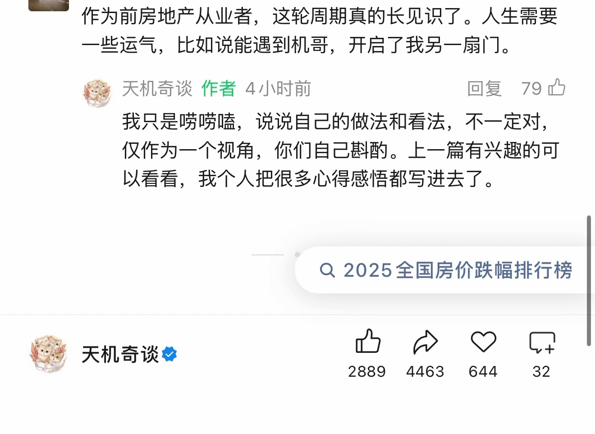
查看本页自动识别文字（OCR待核对） · 20 处低置信度提示
以下为未经逐字核对的自动识别结果，请以上方原图为准。
识别器标记 20 处低置信度，请对照截图核对
这些是识别器的风险提示，并不等于已确认的错误。
- 一些运气， 比如说能遇到机哥， 开启了我另一扇门。
- 竹天机奇谈作者 4 小时前回复 “79 办
- 我只是嘴噶嘻， 说说自己的做法和看法， 不一定对，
- 仅作为一个视角， 你们自己项酌。 上一篇有兴趣的可
- Q 2025 全国房价跌幅排行榜
- 站天机奇谈多加
按日期浏览全部来源（同日按条目标识排序）
回到页首 ↑